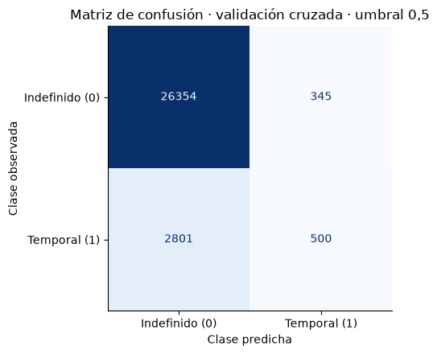
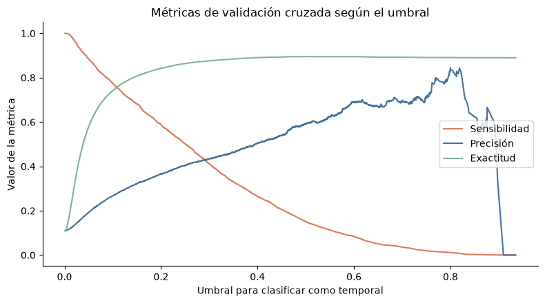
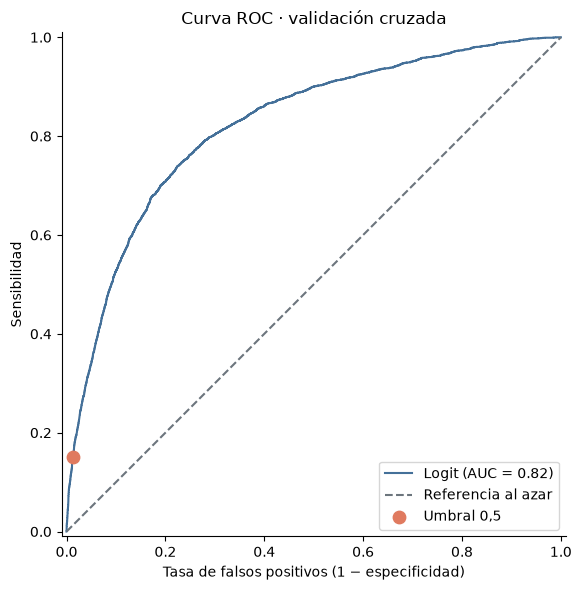
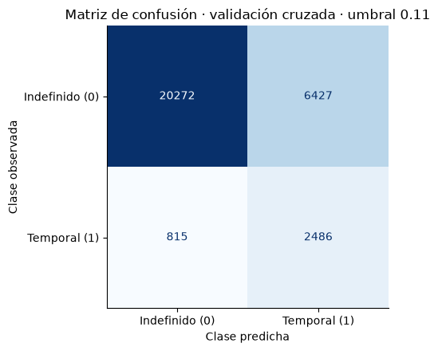
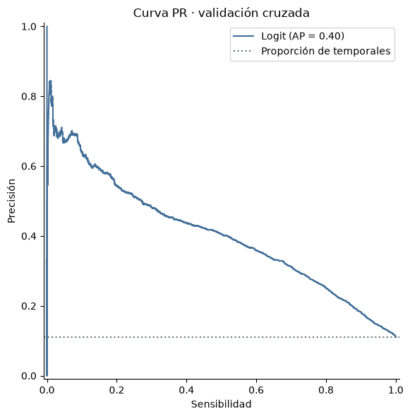

import numpy as np
import pandas as pd
import matplotlib.pyplot as plt
from IPython.display import display
# Herramientas para preparar los predictores y encadenarlos con un modelo.
# `clone` permite crear una copia sin ajustar de un modelo o preprocesador (inicia cada ajuste desde cero)
from sklearn.base import clone
from sklearn.compose import ColumnTransformer
from sklearn.pipeline import Pipeline
from sklearn.preprocessing import StandardScaler, OneHotEncoder
# Modelos de regresión y clasificación que usaremos.
from sklearn.linear_model import Ridge, Lasso, ElasticNet, LogisticRegression
from sklearn.dummy import DummyClassifier
# Herramientas para dividir los datos y validar los modelos.
from sklearn.model_selection import (
train_test_split, KFold, StratifiedKFold, GridSearchCV,
cross_val_score, cross_val_predict, TunedThresholdClassifierCV,
)
# Métricas y representaciones gráficas.
from sklearn.metrics import (
root_mean_squared_error, make_scorer,
confusion_matrix, confusion_matrix_at_thresholds, ConfusionMatrixDisplay, RocCurveDisplay,
PrecisionRecallDisplay, accuracy_score, precision_score,
recall_score, f1_score, roc_auc_score, log_loss, average_precision_score,
)
# La semilla permite reproducir las divisiones de los datos.
SEMILLA = 42
AZUL = "#447099"
NARANJA = "#E07A5F"
SALVIA = "#81B29A"
GRIS = "#6C757D"
plt.rcParams.update({"figure.figsize": (8, 4.5), "axes.spines.top": False,
"axes.spines.right": False})Tema 2. Evaluación y selección de modelos
Versión resuelta, con resultados
NotaVersión resuelta
Incluye las soluciones de los ejercicios y los resultados de ejecutar cada celda. Para trabajar con el cuaderno, descárgalo sin resultados o ábrelo en Colab.
Técnicas Avanzadas de Predicción en Negocios · Versión revisada
Datos: Encuesta Cuatrienal de Estructura Salarial 2022 (INE), microdatos anonimizados.
Qué vamos a hacer
- Incertidumbre del error de validación. Calcularemos cinco RMSE, aprenderemos a usar
GridSearchCVcon Ridge y repetiremos los pasos con Lasso y Elastic Net. Compararemos las familias con validación cruzada anidada. - Evaluación de un clasificador. Obtendremos probabilidades de contrato temporal y veremos cómo un umbral las convierte en clases. Usaremos una matriz de confusión y una curva ROC.
- Clases poco frecuentes. Veremos la curva PR, los costes de los errores y los pesos de estimación.
- Evaluación final. Consultaremos el test de regresión (sección 1.6) y el de clasificación (sección 3.4) después de fijar las decisiones con el entrenamiento.
El código presenta cada operación antes de reutilizarla en un bucle o una función. Las tablas muestran errores y probabilidades en sus unidades habituales.
Tiempo orientativo: 75–90 minutos, incluidos siete ejercicios. Las cuatro preguntas «Para pensar» tienen respuesta plegada. Los ejercicios deben resolverse en el espacio indicado.
Vocabulario. Una partición es cada una de las k partes de la validación cruzada. Una división es el reparto único entre entrenamiento y test. Cada métrica indica sobre qué conjunto se calcula.
0. Preparación
Usa el entorno tap del curso. Importamos las herramientas para tratar datos, construir modelos y evaluarlos. Comenzamos cargando bibliotecas.
Datos y población del ejercicio
Usamos los datos de la EES en la web del curso. Repetimos las observaciones de la actividad anterior (clab 2): salario positivo y con límite en el percentil 99 de la distribución de salario. Los resultados describen esa población con salarios recortados en la parte superior. El escalado y la codificación se aprenderán dentro de cada ajuste.
# Dirección del fichero de datos en la web del curso.
URL_DATOS = "https://juandmontoro.github.io/tap/data/EES_2022.tab"
# El separador del fichero es una tabulación.
df = pd.read_csv(URL_DATOS, sep="\t", low_memory=False)
# Quitamos comillas y espacios de los nombres de las columnas.
# .str aplica cada método de texto a todos los nombres a la vez.
df.columns = df.columns.str.replace('"', "").str.strip()
# Conservamos la población docente definida en la actividad anterior.
tope = df["RETRINOIN"].quantile(0.99)
salario_admitido = (df["RETRINOIN"] > 0) & (df["RETRINOIN"] <= tope)
limpio = df[salario_admitido].copy()
# Elegimos las mismas 40 000 observaciones de la actividad anterior.
datos = limpio.sample(n=40000, random_state=SEMILLA).reset_index(drop=True)
print("Observaciones del ejercicio:", len(datos))Observaciones del ejercicio: 40000Respuesta y predictores de regresión
La respuesta es el salario bruto anual (RETRINOIN, en euros). Usamos los 14 predictores categóricos y los dos numéricos del tema 1. Quedan fuera los componentes del salario, que contienen parte de la respuesta, los identificadores y el peso muestral.
Reservamos el 25 % para test. El bloque 1 usa 200 observaciones del entrenamiento, para poder apreciar la variabilidad del error. El test se consultará en la sección 1.6.
RESPUESTA = "RETRINOIN"
PRED_CATEGORICOS = [
"SEXO", "ESTU", "ANOS2", "TIPOCON", "TIPOJOR", "CNO1", "CNACE",
"CONTROL", "MERCADO", "REGULACION", "RESPONSA", "NUTS1", "TIPOPAIS", "ESTRATO2",
]
PRED_NUMERICOS = ["ANOANTI", "JAP"]
PREDICTORES = PRED_CATEGORICOS + PRED_NUMERICOS
# X contiene los predictores e y contiene la respuesta.
X = datos[PREDICTORES].copy()
y = datos[RESPUESTA]
# Los códigos de estas columnas representan categorías.
X[PRED_CATEGORICOS] = X[PRED_CATEGORICOS].astype("category")
# Separamos el test antes de ajustar cualquier transformación o modelo.
X_train, X_test, y_train, y_test = train_test_split(
X, y, test_size=0.25, random_state=SEMILLA,
)
# Seleccionamos 200 filas del entrenamiento y sus respuestas correspondientes.
X_pocos = X_train.sample(n=200, random_state=SEMILLA)
y_pocos = y_train.loc[X_pocos.index]
print("Entrenamiento:", len(X_train), "| test reservado:", len(X_test))
print("Observaciones para el bloque 1:", len(X_pocos))Entrenamiento: 30000 | test reservado: 10000
Observaciones para el bloque 1: 200Preprocesamiento, paso a paso
StandardScaler centra y escala las variables numéricas. OneHotEncoder crea columnas indicadoras para las categorías. min_frequency=0.01 agrupa categorías poco frecuentes y handle_unknown="ignore" permite predecir cuando aparece una categoría ausente del ajuste.
El ColumnTransformer indica qué transformación corresponde a cada grupo de columnas. Después añadimos Ridge al Pipeline. Al ejecutar fit, el escalado y la codificación se aprenden con las filas recibidas en ese ajuste.
# Definimos función para preprocesar
def crear_preprocesador():
return ColumnTransformer(
transformers=[
("numericas", StandardScaler(), PRED_NUMERICOS),
("categoricas", OneHotEncoder(handle_unknown="ignore",
min_frequency=0.01,
sparse_output=False),
PRED_CATEGORICOS),
],
remainder="drop",
)
# Construimos un modelo completo: preparación de datos seguida de Ridge.
ridge = Pipeline([
("preprocesado", crear_preprocesador()),
("modelo", Ridge(alpha=14)),
])Bloque 1. Incertidumbre del error de validación
1.1 El error estimado por validación cruzada: con k=5 obtenemos cinco RMSE
La comparación entre una división y cinco particiones ya se trabajó en clase. Aquí comenzamos directamente con cinco particiones y un Ridge con alpha=14, cercano al usado en el tema 1.
KFold reparte las 200 observaciones en cinco particiones. En cada vuelta ajustamos con 160 observaciones y predecimos las otras 40. Cada observación hace de validación una vez.
La función cross_val_score hace las cinco vueltas. Recibe el Pipeline, los predictores, la respuesta, las particiones (cv) y la métrica (scoring). Devuelve un array de numpy con una puntuación por partición. Pedimos el RMSE con scoring="neg_root_mean_squared_error". Este criterio devuelve el RMSE con signo negativo (lo explicamos en la sección 1.2), así que cambiamos el signo para obtenerlo en euros. Conservamos un error por partición para poder observar su dispersión.
# Barajamos las 200 observaciones y las repartimos en cinco particiones.
cv5 = KFold(n_splits=5, shuffle=True, random_state=SEMILLA)
# Validamos el modelo sobre las cinco particiones creadas.
# cross_val_score devuelve el puntaje de un modelo para las diferentes particiones (con scoring seleccionado)
# El criterio es -RMSE (podemos cambiar el signo para ordenar de acuerdo a RMSE)
validacion = cross_val_score(ridge,X_pocos,y_pocos,
scoring='neg_root_mean_squared_error',cv=cv5)
# Agrupamos los resultados en un df (cambiamos signo para pasar de -RMSE a RMSE)
rmse_particiones = pd.DataFrame({'k':[1,2,3,4,5],'RMSE': - np.round(validacion)})
rmse_particiones| k | RMSE | |
|---|---|---|
| 0 | 1 | 17084.0 |
| 1 | 2 | 9827.0 |
| 2 | 3 | 12399.0 |
| 3 | 4 | 13047.0 |
| 4 | 5 | 17508.0 |
Calculamos la media, la desviación típica de los cinco RMSE y el error típico orientativo de su media:
\[ET = \frac{s_{RMSE}}{\sqrt{5}}.\]
La desviación típica divide entre 5, como la que guarda scikit-learn en std_test_score (sección 1.2). El método .std() de pandas divide por defecto entre 5 − 1 = 4, por eso le indicamos ddof=0. Ya que los conjuntos de ajuste se solapan, los cinco errores están relacionados. Este error típico puede subestimar la incertidumbre y se usará como aproximación.
# La media resume el error obtenido en las cinco validaciones.
rmse_medio = rmse_particiones['RMSE'].mean()
# Desviación típica de los cinco RMSE: ddof=0 divide entre 5, como std_test_score de scikit-learn.
desviacion_rmse = rmse_particiones['RMSE'].std(ddof=0)
# El error típico divide la desviación típica entre la raíz del número de particiones.
error_tipico = desviacion_rmse / np.sqrt(5)
print("RMSE medio de validación:", round(rmse_medio), "euros")
print("Desviación típica entre particiones:", round(desviacion_rmse), "euros")
print("Error típico orientativo:", round(error_tipico), "euros")RMSE medio de validación: 13973 euros
Desviación típica entre particiones: 2922 euros
Error típico orientativo: 1307 eurosInterpretación. Cada fila mide el error sobre un grupo distinto de 40 observaciones. La desviación típica describe cuánto se separan esos cinco errores. El error típico aproxima la incertidumbre de su media. Al disponer de pocas observaciones, algunas particiones pueden resultar más difíciles de predecir.
1.2 GridSearchCV con un solo modelo: Ridge
En el tema 1 quedó pendiente un detalle: con LassoCV dentro del Pipeline, el preprocesador se ajustaba una sola vez con las 200 observaciones y la validación cruzada se hacía después. GridSearchCV valida el Pipeline entero: en cada partición vuelve a ajustar el escalado y la codificación solo con las observaciones de ajuste. Así ninguna observación de validación influye en el preprocesado.
GridSearchCV recibe tres cosas:
- el
Pipeline; - una rejilla de hiperparámetros, en un diccionario. El nombre de cada hiperparámetro lleva delante el nombre del paso y dos guiones bajos:
"modelo__alpha"es elalphadel paso"modelo"; - las particiones (
cv) y la métrica (scoring).
Ajusta todas las combinaciones de la rejilla con validación cruzada y, al final, reajusta la mejor con todas las observaciones (best_estimator_). Hacemos una búsqueda por familia, todas con las mismas particiones.
Usaremos RMSE. Importante: la API de scikit-learn maximiza puntuaciones, por ello utilizamos el RMSE con signo negativo (neg_root_mean_squared_error): Documentación de scoring.
# logspace crea 15 valores de alpha entre 10**(-1) y 10**4.
malla_ridge = {"modelo__alpha": np.logspace(-1, 4, 15)}
# Cada valor de alpha se evalúa con las mismas cinco particiones.
busqueda_ridge = GridSearchCV(
estimator=ridge,
param_grid=malla_ridge,
scoring='neg_root_mean_squared_error',
cv=cv5,
)
# La búsqueda ajusta y valida todas las candidatas.
busqueda_ridge.fit(X_pocos, y_pocos)
# El mejor Pipeline queda reajustado con las 200 observaciones.
ridge_final = busqueda_ridge.best_estimator_
print("Mejor alpha:", busqueda_ridge.best_params_)
print("RMSE de validación del mejor alpha:", round(-busqueda_ridge.best_score_), "euros")Mejor alpha: {'modelo__alpha': np.float64(13.894954943731374)}
RMSE de validación del mejor alpha: 13973 euros# Visualizamos el modelo entrenado
ridge_finalPipeline(steps=[('preprocesado',
ColumnTransformer(transformers=[('numericas', StandardScaler(),
['ANOANTI', 'JAP']),
('categoricas',
OneHotEncoder(handle_unknown='ignore',
min_frequency=0.01,
sparse_output=False),
['SEXO', 'ESTU', 'ANOS2',
'TIPOCON', 'TIPOJOR', 'CNO1',
'CNACE', 'CONTROL',
'MERCADO', 'REGULACION',
'RESPONSA', 'NUTS1',
'TIPOPAIS', 'ESTRATO2'])])),
('modelo', Ridge(alpha=np.float64(13.894954943731374)))])In a Jupyter environment, please rerun this cell to show the HTML representation or trust the notebook. On GitHub, the HTML representation is unable to render, please try loading this page with nbviewer.org.
Parameters
Fitted attributes
Parameters
Fitted attributes
['ANOANTI', 'JAP']
Parameters
Fitted attributes
2 features
| ANOANTI |
| JAP |
['SEXO', 'ESTU', 'ANOS2', 'TIPOCON', 'TIPOJOR', 'CNO1', 'CNACE', 'CONTROL', 'MERCADO', 'REGULACION', 'RESPONSA', 'NUTS1', 'TIPOPAIS', 'ESTRATO2']
Parameters
Fitted attributes
85 features
| SEXO_1 |
| SEXO_6 |
| ESTU_2 |
| ESTU_3 |
| ESTU_4 |
| ESTU_5 |
| ESTU_6 |
| ESTU_7 |
| ANOS2_2 |
| ANOS2_3 |
| ANOS2_4 |
| ANOS2_5 |
| ANOS2_6 |
| ANOS2_infrequent_sklearn |
| TIPOCON_1 |
| TIPOCON_2 |
| TIPOJOR_1 |
| TIPOJOR_2 |
| CNO1_A0 |
| CNO1_B0 |
| CNO1_C0 |
| CNO1_D0 |
| CNO1_E0 |
| CNO1_F0 |
| CNO1_G0 |
| CNO1_H0 |
| CNO1_I0 |
| CNO1_K0 |
| CNO1_L0 |
| CNO1_M0 |
| CNO1_N0 |
| CNO1_O0 |
| CNO1_P0 |
| CNACE_C1 |
| CNACE_C2 |
| CNACE_C3 |
| CNACE_C4 |
| CNACE_C6 |
| CNACE_C7 |
| CNACE_C8 |
| CNACE_D0 |
| CNACE_E0 |
| CNACE_F0 |
| CNACE_G1 |
| CNACE_G2 |
| CNACE_H1 |
| CNACE_H2 |
| CNACE_I0 |
| CNACE_J0 |
| CNACE_K0 |
| CNACE_L0 |
| CNACE_M0 |
| CNACE_N0 |
| CNACE_O0 |
| CNACE_P0 |
| CNACE_Q0 |
| CNACE_R0 |
| CNACE_S0 |
| CNACE_infrequent_sklearn |
| CONTROL_1 |
| CONTROL_2 |
| MERCADO_1 |
| MERCADO_2 |
| MERCADO_3 |
| MERCADO_4 |
| REGULACION_1 |
| REGULACION_2 |
| REGULACION_3 |
| REGULACION_4 |
| REGULACION_5 |
| RESPONSA_0 |
| RESPONSA_1 |
| NUTS1_1 |
| NUTS1_2 |
| NUTS1_3 |
| NUTS1_4 |
| NUTS1_5 |
| NUTS1_6 |
| NUTS1_7 |
| TIPOPAIS_1 |
| TIPOPAIS_2 |
| ESTRATO2_0 |
| ESTRATO2_1 |
| ESTRATO2_2 |
| ESTRATO2_3 |
87 features
| numericas__ANOANTI |
| numericas__JAP |
| categoricas__SEXO_1 |
| categoricas__SEXO_6 |
| categoricas__ESTU_2 |
| categoricas__ESTU_3 |
| categoricas__ESTU_4 |
| categoricas__ESTU_5 |
| categoricas__ESTU_6 |
| categoricas__ESTU_7 |
| categoricas__ANOS2_2 |
| categoricas__ANOS2_3 |
| categoricas__ANOS2_4 |
| categoricas__ANOS2_5 |
| categoricas__ANOS2_6 |
| categoricas__ANOS2_infrequent_sklearn |
| categoricas__TIPOCON_1 |
| categoricas__TIPOCON_2 |
| categoricas__TIPOJOR_1 |
| categoricas__TIPOJOR_2 |
| categoricas__CNO1_A0 |
| categoricas__CNO1_B0 |
| categoricas__CNO1_C0 |
| categoricas__CNO1_D0 |
| categoricas__CNO1_E0 |
| categoricas__CNO1_F0 |
| categoricas__CNO1_G0 |
| categoricas__CNO1_H0 |
| categoricas__CNO1_I0 |
| categoricas__CNO1_K0 |
| categoricas__CNO1_L0 |
| categoricas__CNO1_M0 |
| categoricas__CNO1_N0 |
| categoricas__CNO1_O0 |
| categoricas__CNO1_P0 |
| categoricas__CNACE_C1 |
| categoricas__CNACE_C2 |
| categoricas__CNACE_C3 |
| categoricas__CNACE_C4 |
| categoricas__CNACE_C6 |
| categoricas__CNACE_C7 |
| categoricas__CNACE_C8 |
| categoricas__CNACE_D0 |
| categoricas__CNACE_E0 |
| categoricas__CNACE_F0 |
| categoricas__CNACE_G1 |
| categoricas__CNACE_G2 |
| categoricas__CNACE_H1 |
| categoricas__CNACE_H2 |
| categoricas__CNACE_I0 |
| categoricas__CNACE_J0 |
| categoricas__CNACE_K0 |
| categoricas__CNACE_L0 |
| categoricas__CNACE_M0 |
| categoricas__CNACE_N0 |
| categoricas__CNACE_O0 |
| categoricas__CNACE_P0 |
| categoricas__CNACE_Q0 |
| categoricas__CNACE_R0 |
| categoricas__CNACE_S0 |
| categoricas__CNACE_infrequent_sklearn |
| categoricas__CONTROL_1 |
| categoricas__CONTROL_2 |
| categoricas__MERCADO_1 |
| categoricas__MERCADO_2 |
| categoricas__MERCADO_3 |
| categoricas__MERCADO_4 |
| categoricas__REGULACION_1 |
| categoricas__REGULACION_2 |
| categoricas__REGULACION_3 |
| categoricas__REGULACION_4 |
| categoricas__REGULACION_5 |
| categoricas__RESPONSA_0 |
| categoricas__RESPONSA_1 |
| categoricas__NUTS1_1 |
| categoricas__NUTS1_2 |
| categoricas__NUTS1_3 |
| categoricas__NUTS1_4 |
| categoricas__NUTS1_5 |
| categoricas__NUTS1_6 |
| categoricas__NUTS1_7 |
| categoricas__TIPOPAIS_1 |
| categoricas__TIPOPAIS_2 |
| categoricas__ESTRATO2_0 |
| categoricas__ESTRATO2_1 |
| categoricas__ESTRATO2_2 |
| categoricas__ESTRATO2_3 |
Parameters
Fitted attributes
Extraer los resultados del ajuste
Cada búsqueda guarda sus resultados en el atributo cv_results_ por cada combinación de hiperparámetros. Se trata de un diccionario con una entrada por columna (mean_test_score, split0_test_score, …) y una posición por combinación de la rejilla. Las claves mean_test_score y std_test_score guardan la media y la desviación típica entre particiones. Aquí la palabra test se refiere a la validación interna. Nuestro test final sigue reservado.
Nota: std_test_score divide entre k, y no entre k − 1. A partir de este, calculamos el error típico (medida de precisión de la media de los errores) como la desviación típica de los cinco errores dividida por \(\sqrt{5}\). Es una medida orientativa de cuánto podría cambiar el error de validación. En teoría hemos visto que tiende a quedarse corto, porque los cinco errores comparten observaciones de ajuste y no son independientes.
# los resultados de la validación cruzada se almacenan en el objeto .cv_results_
# Los recuperamos en un dataframe
resultados_ridge = pd.DataFrame(busqueda_ridge.cv_results_)
# Seleccionamos las variables que nos interesan
# .copy() crea una tabla nueva, a la que añadimos columnas sin avisos de pandas
resultados_ridge = resultados_ridge[['param_modelo__alpha','mean_test_score','std_test_score']].copy()
# Añadimos una columna que calcula el error típico dividiendo por raiz de k (raiz de 5)
resultados_ridge['error_tipico'] = resultados_ridge['std_test_score']/np.sqrt(5)
# Cambiamos de signo el puntaje: de -RMSE a RMSE
resultados_ridge['mean_test_score'] = -resultados_ridge['mean_test_score']
# Mostramos en pantalla
resultados_ridge| param_modelo__alpha | mean_test_score | std_test_score | error_tipico | |
|---|---|---|---|---|
| 0 | 0.100000 | 17865.055417 | 800.983654 | 358.210780 |
| 1 | 0.227585 | 17365.800604 | 991.331120 | 443.336754 |
| 2 | 0.517947 | 16594.309350 | 1377.430454 | 616.005626 |
| 3 | 1.178769 | 15661.968383 | 1880.240674 | 840.869192 |
| 4 | 2.682696 | 14796.059433 | 2349.060318 | 1050.531711 |
| 5 | 6.105402 | 14192.276084 | 2700.699085 | 1207.789348 |
| 6 | 13.894955 | 13973.051434 | 2920.685430 | 1306.170233 |
| 7 | 31.622777 | 14204.013482 | 3045.895731 | 1362.165981 |
| 8 | 71.968567 | 14925.776186 | 3082.205874 | 1378.404371 |
| 9 | 163.789371 | 16119.817205 | 2993.892694 | 1338.909516 |
| 10 | 372.759372 | 17554.603881 | 2825.713365 | 1263.697434 |
| 11 | 848.342898 | 18797.712641 | 2678.901895 | 1198.041348 |
| 12 | 1930.697729 | 19605.802648 | 2591.214217 | 1158.826227 |
| 13 | 4393.970561 | 20039.410929 | 2547.432376 | 1139.246392 |
| 14 | 10000.000000 | 20248.833326 | 2527.157546 | 1130.179213 |
Interpretación. El alpha elegido minimiza el RMSE medio. La desviación típica y el error típico acompañan a esa media para mostrar su variabilidad. GridSearchCV selecciona por la media y deja que fijemos por separado una regla que tenga en cuenta la incertidumbre.
1.3 Repetir con Lasso y Elastic Net
Ya hemos definido, ajustado e inspeccionado una búsqueda. Ahora repetimos esos mismos pasos con las otras dos familias. Guardamos los resultados en busquedas, un diccionario cuya clave es el nombre de la familia. Por ejemplo, busquedas["Lasso"] permite recuperar su búsqueda.
Elastic Net combina dos hiperparámetros: alpha y l1_ratio. Se evalúan todas las parejas de la malla. El Pipeline completo se vuelve a ajustar dentro de cada partición.
# Comenzamos por lasso
# Malla de valores de alpha entre 10**(-1) y 10**4.
malla_lasso = {"modelo__alpha": np.logspace(-1, 4, 15)}
# Modelo (preprocesador + estimador)
lasso = Pipeline([
("preprocesado", crear_preprocesador()),
("modelo", Lasso(max_iter=50_000)),
])
# Cada valor de alpha se evalúa con las mismas cinco particiones.
busqueda_lasso = GridSearchCV(
estimator=lasso,
param_grid=malla_lasso,
scoring='neg_root_mean_squared_error',
cv=cv5,
)
# La búsqueda ajusta y valida todas las candidatas.
busqueda_lasso.fit(X_pocos, y_pocos)
# El mejor Pipeline queda reajustado con las 200 observaciones.
lasso_final = busqueda_lasso.best_estimator_
print("Mejor alpha:", busqueda_lasso.best_params_)
print("RMSE de validación del mejor alpha:", round(-busqueda_lasso.best_score_), "euros")Mejor alpha: {'modelo__alpha': np.float64(372.7593720314942)}
RMSE de validación del mejor alpha: 14592 euros# Misma estrategia con Elastic Net.
# Ahora la malla hace la búsqueda sobre dos hiperparámetros:
# 15 valores de alpha entre 10**(-2) y 10**3 y tres valores de l1_ratio.
malla_enet = {
"modelo__alpha": np.logspace(-2, 3, 15),
"modelo__l1_ratio": [0.1, 0.5, 0.9],
}
# Modelo (preprocesador + estimador)
enet = Pipeline([
("preprocesado", crear_preprocesador()),
("modelo", ElasticNet(max_iter=50_000)),
])
# Cada pareja de alpha y l1_ratio se evalúa con las mismas cinco particiones.
busqueda_enet = GridSearchCV(
estimator=enet,
param_grid=malla_enet,
scoring='neg_root_mean_squared_error',
cv=cv5,
)
# La búsqueda ajusta y valida todas las candidatas.
busqueda_enet.fit(X_pocos, y_pocos)
# El mejor Pipeline queda reajustado con las 200 observaciones.
enet_final = busqueda_enet.best_estimator_
print("Mejores hiperparámetros:", busqueda_enet.best_params_)
print("RMSE de validación de la mejor pareja:", round(-busqueda_enet.best_score_), "euros")Mejores hiperparámetros: {'modelo__alpha': np.float64(0.11787686347935872), 'modelo__l1_ratio': 0.1}
RMSE de validación de la mejor pareja: 13986 eurosUna tabla comparable para las tres familias
Extraemos la fila elegida en cada búsqueda. Para calcular el error típico usamos, como en la tabla de Ridge, la desviación típica que guarda std_test_score. Contamos además los coeficientes distintos de cero para describir la sencillez del modelo. Se excluye el intercepto de ese recuento.
# Creamos un diccionario con cada búsqueda
busquedas = {'Ridge': busqueda_ridge,
'Lasso': busqueda_lasso,
'Elastic Net': busqueda_enet }
filas = []
for nombre, busqueda in busquedas.items():
# Recuperamos los resultados de cv_results_ en un dataframe, como en la tabla de Ridge.
resultados = pd.DataFrame(busqueda.cv_results_)
# best_index_ indica la fila del hiperparámetro elegido.
mejor = resultados.loc[busqueda.best_index_]
# RMSE medio (cambiamos el signo) y desviación típica que guarda scikit-learn.
rmse_medio = -mejor["mean_test_score"]
desviacion = mejor["std_test_score"]
# Error típico: dividimos por la raíz del número de particiones (raíz de 5).
k = busqueda.n_splits_
error_tipico = desviacion / np.sqrt(k)
# Los coeficientes corresponden al modelo reajustado con las 200 observaciones.
coeficientes = busqueda.best_estimator_["modelo"].coef_
numero_coeficientes = np.count_nonzero(np.abs(coeficientes) > 1e-8)
# Añadimos una fila con los resultados de esta familia.
filas.append({
"Familia": nombre,
"RMSE CV (€)": rmse_medio,
"Desviación típica (€)": desviacion,
"Error típico (€)": error_tipico,
"Coeficientes no nulos": numero_coeficientes,
})
decision = pd.DataFrame(filas).set_index("Familia")
display(decision.round(0))| RMSE CV (€) | Desviación típica (€) | Error típico (€) | Coeficientes no nulos | |
|---|---|---|---|---|
| Familia | ||||
| Ridge | 13973.0 | 2921.0 | 1306.0 | 87 |
| Lasso | 14592.0 | 3153.0 | 1410.0 | 20 |
| Elastic Net | 13986.0 | 2958.0 | 1323.0 | 87 |
Interpretación. Ridge tiene el menor RMSE de validación cruzada. El error típico de las tres familias está entre 1 306 y 1 410 euros, más de cien veces la diferencia entre Ridge y Elastic Net. ¿Qué elección realizamos? ¿En base a qué criterio?
Para pensar 1
Si la diferencia de RMSE entre dos modelos es mucho menor que sus errores típicos, ¿esperarías que el mismo modelo ganara siempre al cambiar las particiones?
Respuesta
El orden podría cambiar. Otra división modifica las observaciones de ajuste y validación y, con ellas, los RMSE. Una diferencia pequeña aconseja considerar la incertidumbre y la sencillez antes de decidir.
1.4 Regla del error típico
Cuando varios modelos tienen errores de validación que se diferencian en menos de un error típico, la validación cruzada no permite ordenarlos con seguridad. La regla del error típico elige, entre los modelos cuyo error no supera el mínimo más un error típico, el más sencillo. Aquí medimos la sencillez con el número de coeficientes distintos de cero.
Ejercicio 1. La regla del error típico dentro de Lasso
La regla también sirve para elegir alpha dentro de una familia. Usa la búsqueda de Lasso, busquedas["Lasso"]:
- Convierte su
cv_results_en unDataFrame(pd.DataFrame(...)). Extrae, para cadaalpha, el RMSE de validación (mean_test_score) y su error típico (std_test_scoredividida por \(\sqrt{5}\)), como en la tabla de Ridge de la sección 1.2. - Calcula el límite: RMSE mínimo + su error típico.
- Entre los
alphacuyo RMSE no supera el límite, toma el mayor (más penalización, modelo más sencillo). - Reajusta el
Pipelinede Lasso con ese valor dealphaenX_pocos,y_pocosy cuenta los coeficientes distintos de cero. Compáralos con los delalphade menor RMSE (busquedas["Lasso"].best_estimator_). ¿Cuánto RMSE de validación cuesta la simplificación?
Solución del ejercicio 1
# Convertimos los resultados de la búsqueda de Lasso en una tabla.
resultados_lasso = pd.DataFrame(busquedas["Lasso"].cv_results_)
# Paso 1: seleccionamos alpha, el RMSE medio y la desviación típica de cada candidata.
# .copy() crea una tabla nueva, a la que añadimos columnas sin avisos de pandas.
tabla_lasso = resultados_lasso[["param_modelo__alpha", "mean_test_score", "std_test_score"]].copy()
# Añadimos el error típico: la desviación típica dividida por la raíz de 5.
tabla_lasso["error_tipico"] = tabla_lasso["std_test_score"] / np.sqrt(5)
# Cambiamos de signo el puntaje: de -RMSE a RMSE.
tabla_lasso["mean_test_score"] = -tabla_lasso["mean_test_score"]
display(tabla_lasso.round(2))| param_modelo__alpha | mean_test_score | std_test_score | error_tipico | |
|---|---|---|---|---|
| 0 | 0.10 | 18372.05 | 721.73 | 322.77 |
| 1 | 0.23 | 18363.00 | 719.92 | 321.96 |
| 2 | 0.52 | 18342.45 | 715.93 | 320.17 |
| 3 | 1.18 | 18296.15 | 708.21 | 316.72 |
| 4 | 2.68 | 18192.54 | 694.66 | 310.66 |
| 5 | 6.11 | 17961.13 | 682.92 | 305.41 |
| 6 | 13.89 | 17484.37 | 753.06 | 336.78 |
| 7 | 31.62 | 16615.69 | 1099.98 | 491.92 |
| 8 | 71.97 | 15614.28 | 1775.71 | 794.12 |
| 9 | 163.79 | 14921.22 | 2566.34 | 1147.70 |
| 10 | 372.76 | 14591.99 | 3152.53 | 1409.85 |
| 11 | 848.34 | 15415.60 | 3190.43 | 1426.80 |
| 12 | 1930.70 | 17094.57 | 3371.22 | 1507.65 |
| 13 | 4393.97 | 18315.52 | 2961.75 | 1324.53 |
| 14 | 10000.00 | 20344.74 | 2518.67 | 1126.38 |
# Paso 2: best_index_ indica la fila con el menor RMSE. Con ella calculamos el límite de la regla.
fila_minimo = busquedas["Lasso"].best_index_
alpha_minimo = tabla_lasso.loc[fila_minimo, "param_modelo__alpha"]
rmse_minimo = tabla_lasso.loc[fila_minimo, "mean_test_score"]
error_tipico_minimo = tabla_lasso.loc[fila_minimo, "error_tipico"]
limite = rmse_minimo + error_tipico_minimo
print("alpha de menor RMSE:", round(alpha_minimo, 2))
print("Límite (RMSE mínimo + su error típico):", round(limite), "euros")
# Paso 3: candidatas que no superan el límite. Elegimos el mayor alpha.
dentro_limite = tabla_lasso[tabla_lasso["mean_test_score"] <= limite]
fila_regla = dentro_limite["param_modelo__alpha"].idxmax()
alpha_regla = dentro_limite.loc[fila_regla, "param_modelo__alpha"]
rmse_regla = dentro_limite.loc[fila_regla, "mean_test_score"]
print("alpha de la regla del error típico:", round(alpha_regla, 2))alpha de menor RMSE: 372.76
Límite (RMSE mínimo + su error típico): 16002 euros
alpha de la regla del error típico: 848.34# Paso 4: reajustamos Lasso con el alpha de la regla en las 200 observaciones.
lasso_regla = Pipeline([
("preprocesado", crear_preprocesador()),
("modelo", Lasso(alpha=alpha_regla, max_iter=50_000)),
])
lasso_regla.fit(X_pocos, y_pocos)
# Contamos los coeficientes distintos de cero de los dos modelos.
coeficientes_regla = lasso_regla["modelo"].coef_
coeficientes_minimo = busquedas["Lasso"].best_estimator_["modelo"].coef_
no_nulos_regla = np.count_nonzero(np.abs(coeficientes_regla) > 1e-8)
no_nulos_minimo = np.count_nonzero(np.abs(coeficientes_minimo) > 1e-8)
# Comparamos las dos elecciones de alpha.
comparacion_regla = pd.DataFrame({
"Elección": ["Menor RMSE", "Regla del error típico"],
"alpha": [alpha_minimo, alpha_regla],
"RMSE CV (€)": [rmse_minimo, rmse_regla],
"Coeficientes no nulos": [no_nulos_minimo, no_nulos_regla],
})
display(comparacion_regla.set_index("Elección").round(2))
print("Coste de la simplificación:", round(rmse_regla - rmse_minimo), "euros de RMSE de validación")| alpha | RMSE CV (€) | Coeficientes no nulos | |
|---|---|---|---|
| Elección | |||
| Menor RMSE | 372.76 | 14591.99 | 20 |
| Regla del error típico | 848.34 | 15415.60 | 12 |
Coste de la simplificación: 824 euros de RMSE de validaciónSolución. El menor RMSE de validación de Lasso es 14 592 euros, con alpha = 372,76 y 20 coeficientes distintos de cero. Su error típico es 1 410 euros, así que el límite es 16 002 euros. El mayor alpha dentro del límite es 848,34. El modelo conserva 12 coeficientes y su RMSE de validación es 15 416 euros. La simplificación cuesta 824 euros de RMSE de validación, menos de un error típico, y elimina 8 coeficientes.
1.5 Validación cruzada anidada: comparar las tres familias
El mínimo de una búsqueda se obtuvo eligiendo entre varias candidatas con las mismas validaciones. Puede resultar optimista. La validación anidada evalúa cada procedimiento de elección y ajuste sobre observaciones que quedaron fuera de esa elección.
| Nivel | Qué hacemos | Datos que recibe |
|---|---|---|
Interno: GridSearchCV |
Elegimos alpha y, en Elastic Net, l1_ratio |
Solo el entrenamiento de la vuelta externa |
Externo: cross_val_score |
Medimos el RMSE de la búsqueda ya ajustada | La partición externa reservada |
| Comparación de familias | Comparamos sus medias externas | Los cinco RMSE externos de cada familia |
cross_val_score devuelve cinco puntuaciones externas. Su media permite comparar familias y su dispersión ayuda a describir la incertidumbre. No añade automáticamente una penalización por incertidumbre a la métrica de elección.
El procedimiento es el siguiente:
con 5 particiones externas y 5 internas:
1. El bucle externo reserva un 20% para evaluar.
2. El 80 % restante pasa a `GridSearchCV`, que hace su validación interna de cinco particiones para elegir los hiperparámetros.
3. Con los hiperparámetros elegidos, se reajusta el modelo sobre todo ese 80%.
4. Se calcula su error en el 20% reservado.
Se repite cinco veces, hasta que todas las observaciones hayan servido una vez como validación externa. Se obtienen cinco errores externos, cuya media y error típico evalúan el procedimiento de selección y ajuste.Usaremos las mismas particiones externas en las tres familias. Si elegimos una familia con esos resultados, los datos externos también han intervenido en una decisión. El conjunto de test queda reservado para evaluación final.
# Pipeline para Lasso: preprocesado y modelo.
pipeline_lasso = Pipeline([
("preprocesado", crear_preprocesador()),
("modelo", Lasso(max_iter=50_000)),
])
# Particiones internas: eligen los hiperparámetros dentro de cada entrenamiento externo.
cv_interna = KFold(n_splits=5, shuffle=True, random_state=SEMILLA)
# Búsqueda interna de Lasso, con la misma malla de la sección 1.3.
busqueda_lasso_interna = GridSearchCV(
estimator=pipeline_lasso,
param_grid=malla_lasso,
scoring="neg_root_mean_squared_error",
cv=cv_interna,
)
# Particiones externas: evalúan la búsqueda completa en observaciones que no ha visto.
cv_externa = KFold(n_splits=5, shuffle=True, random_state=7)
# En cada partición externa se repite la búsqueda desde cero.
# cross_val_score devuelve puntuaciones negativas: cambiamos el signo para obtener RMSE.
rmse_externos_lasso = -cross_val_score(
busqueda_lasso_interna, X_pocos, y_pocos,
cv=cv_externa,
scoring="neg_root_mean_squared_error",
n_jobs=-1,
)
# Error típico de los cinco RMSE externos.
# cross_val_score devuelve un array de numpy, cuyo .std() divide entre 5, como std_test_score.
error_tipico_externo = rmse_externos_lasso.std() / np.sqrt(5)
print("RMSE externos de Lasso:", rmse_externos_lasso.round(0))
print("Validación cruzada anidada:", round(rmse_externos_lasso.mean()), "euros")
print("Error típico:", round(error_tipico_externo), "euros")
print("Mínimo de la búsqueda de Lasso (best_score_):", round(-busquedas["Lasso"].best_score_), "euros")RMSE externos de Lasso: [13707. 14051. 14992. 17427. 14727.]
Validación cruzada anidada: 14981 euros
Error típico: 584 euros
Mínimo de la búsqueda de Lasso (best_score_): 14592 eurosrmse_externos_lassoarray([13707.24223987, 14050.74082356, 14991.51084972, 17427.39025894,
14727.27952305])Interpretación. Los cinco RMSE externos van de 13 707 a 17 427 euros. Su media, 14 981 euros, supera en 389 euros al mínimo de la búsqueda de Lasso (14 592). Esa diferencia es el optimismo del mínimo: se eligió entre los valores de alpha con las mismas particiones con las que se mide.
Ejercicio 2. Aplica la validación cruzada anidada a Ridge y Elastic Net
Repite la celda anterior con las otras dos familias. Usa las mismas particiones internas (cv_interna) y externas (cv_externa) y las mallas de las secciones 1.2 y 1.3 (malla_ridge, malla_enet):
- Para Ridge y para Elastic Net, construye el
Pipeliney su búsqueda interna conGridSearchCV, y obtén los cinco RMSE externos concross_val_score. Guárdalos enrmse_externos_ridgeyrmse_externos_enet. - Reúne en una tabla los cinco RMSE externos de las tres familias, con una columna por familia. Calcula en otra tabla,
resumen_anidada, la media y el error típico de cada familia. - Guarda en
familia_elegidael nombre de la familia con menor RMSE externo medio. Es la familia que llevaremos al test. - ¿La diferencia entre las medias externas supera sus errores típicos?
Solución del ejercicio 2
# Ridge: Pipeline sin fijar alpha, porque lo elige la búsqueda interna.
pipeline_ridge = Pipeline([
("preprocesado", crear_preprocesador()),
("modelo", Ridge()),
])
# Búsqueda interna de Ridge, con la malla de la sección 1.2.
busqueda_ridge_interna = GridSearchCV(
estimator=pipeline_ridge,
param_grid=malla_ridge,
scoring="neg_root_mean_squared_error",
cv=cv_interna,
)
# Cinco RMSE externos, con las mismas particiones externas que Lasso.
rmse_externos_ridge = -cross_val_score(
busqueda_ridge_interna, X_pocos, y_pocos,
cv=cv_externa,
scoring="neg_root_mean_squared_error",
n_jobs=-1,
)
print("RMSE externos de Ridge:", rmse_externos_ridge.round(0))RMSE externos de Ridge: [12914. 12950. 15530. 17401. 13884.]# Elastic Net: Pipeline sin fijar alpha ni l1_ratio.
pipeline_enet = Pipeline([
("preprocesado", crear_preprocesador()),
("modelo", ElasticNet(max_iter=50_000)),
])
# Búsqueda interna de Elastic Net, con la malla de la sección 1.3.
busqueda_enet_interna = GridSearchCV(
estimator=pipeline_enet,
param_grid=malla_enet,
scoring="neg_root_mean_squared_error",
cv=cv_interna,
)
# Cinco RMSE externos, con las mismas particiones externas.
rmse_externos_enet = -cross_val_score(
busqueda_enet_interna, X_pocos, y_pocos,
cv=cv_externa,
scoring="neg_root_mean_squared_error",
n_jobs=-1,
)
print("RMSE externos de Elastic Net:", rmse_externos_enet.round(0))RMSE externos de Elastic Net: [13154. 12908. 15144. 17101. 14068.]# Paso 2: una columna por familia y una fila por partición externa.
tabla_externos = pd.DataFrame({
"Ridge": rmse_externos_ridge,
"Lasso": rmse_externos_lasso,
"Elastic Net": rmse_externos_enet,
}, index=[1, 2, 3, 4, 5])
tabla_externos.index.name = "Partición externa"
display(tabla_externos.round(0))
# Media y error típico de cada familia.
# ddof=0: la desviación típica divide entre 5, como std_test_score (pandas divide entre 5 - 1 por defecto).
resumen_anidada = pd.DataFrame()
resumen_anidada["RMSE externo medio (€)"] = tabla_externos.mean()
resumen_anidada["Error típico (€)"] = tabla_externos.std(ddof=0) / np.sqrt(5)
display(resumen_anidada.round(0))
# Paso 3: la familia con menor RMSE externo medio pasa al test.
familia_elegida = resumen_anidada["RMSE externo medio (€)"].idxmin()
print("Familia elegida:", familia_elegida)| Ridge | Lasso | Elastic Net | |
|---|---|---|---|
| Partición externa | |||
| 1 | 12914.0 | 13707.0 | 13154.0 |
| 2 | 12950.0 | 14051.0 | 12908.0 |
| 3 | 15530.0 | 14992.0 | 15144.0 |
| 4 | 17401.0 | 17427.0 | 17101.0 |
| 5 | 13884.0 | 14727.0 | 14068.0 |
| RMSE externo medio (€) | Error típico (€) | |
|---|---|---|
| Ridge | 14536.0 | 769.0 |
| Lasso | 14981.0 | 584.0 |
| Elastic Net | 14475.0 | 684.0 |
Familia elegida: Elastic NetSolución. Las medias externas son 14 536 euros para Ridge, 14 981 para Lasso y 14 475 para Elastic Net. La menor es la de Elastic Net, que queda como familia_elegida. En la validación interna de la sección 1.3 el menor RMSE era el de Ridge: el orden de Ridge y Elastic Net cambia. Las diferencias entre medias (61 euros entre Elastic Net y Ridge, 506 entre Elastic Net y Lasso) son menores que los errores típicos externos, que van de 584 a 769 euros. La validación anidada tampoco permite ordenar las familias con seguridad. Seguimos la regla fijada (menor RMSE externo medio) y llevamos Elastic Net al test.
Con el Ejercicio 2 hemos comparado tres procedimientos: elegir hiperparámetros y ajustar Ridge, Lasso o Elastic Net. Fijamos como regla final el menor RMSE externo medio (familia_elegida). La regla del error típico de la sección anterior permite estudiar una elección que favorece la sencillez.
Una diferencia entre el RMSE interno y el externo puede reflejar tanto la selección de hiperparámetros como los distintos tamaños de ajuste y las particiones utilizadas. Esa diferencia aislada no mide exactamente el sesgo de selección. Los errores típicos externos siguen siendo orientativos por el solapamiento entre entrenamientos.
Para pensar 2
¿Para qué usamos el mínimo de la búsqueda, la media externa y el RMSE del test?
Respuesta
El mínimo de la búsqueda sirve para elegir hiperparámetros dentro de cada familia. Las medias externas permiten comparar sus procedimientos de ajuste. Después de fijar la familia y volver a elegir sus hiperparámetros con las 200 observaciones de entrenamiento, el test evalúa el modelo resultante. Si usamos el test para cambiar de familia o de hiperparámetros, deja de ser una evaluación independiente de esa nueva decisión.
1.6 Evaluación final en test
Mostramos el RMSE de test de las tres familias, con sus hiperparámetros ya elegidos y sus modelos ajustados con 200 observaciones. La familia elegida antes de abrir el test es la del Ejercicio 2 (familia_elegida). El test sirve para evaluar y describir los resultados finales. Conservamos la decisión previa aunque cambie el orden de los errores.
Los errores externos proceden de ajustes con 160 observaciones. Los errores del test corresponden a ajustes con 200. También cambian las observaciones utilizadas para evaluar. Por ambas razones, las dos columnas pueden diferir.
# Evaluamos las tres familias ya ajustadas, sin cambiar sus hiperparámetros.
filas = []
for nombre, busqueda in busquedas.items():
# Recuperamos el Pipeline reajustado con las 200 observaciones.
modelo_final = busqueda.best_estimator_
# Predecimos el test y calculamos su RMSE en euros.
prediccion_test = modelo_final.predict(X_test)
rmse_test = root_mean_squared_error(y_test, prediccion_test)
# Añadimos una fila con el resultado de esta familia.
filas.append({"Familia": nombre, "RMSE test (€)": rmse_test})
# Convertimos las filas en una tabla con una fila por familia.
tabla_test_regresion = pd.DataFrame(filas).set_index("Familia")
# Mostramos el RMSE de test de cada familia.
display(tabla_test_regresion.round(0))| RMSE test (€) | |
|---|---|
| Familia | |
| Ridge | 13106.0 |
| Lasso | 13194.0 |
| Elastic Net | 13019.0 |
Ejercicio 3. Completa la tabla anterior
Añade a tabla_test_regresion el RMSE de validación cruzada de cada búsqueda (columna "RMSE CV (€)" de la tabla decision, sección 1.3) y el RMSE externo medio del Ejercicio 2 (resumen_anidada). Añade también una columna que marque familia_elegida. Compara los resultados de las tres familias y la distancia entre su RMSE externo y el de test.
Solución del ejercicio 3
# RMSE de validación cruzada de cada búsqueda (tabla decision, sección 1.3).
tabla_test_regresion["RMSE CV (€)"] = decision["RMSE CV (€)"]
# RMSE externo medio de cada familia (Ejercicio 2).
tabla_test_regresion["RMSE externo medio (€)"] = resumen_anidada["RMSE externo medio (€)"]
# Distancia entre el RMSE de test y el externo.
tabla_test_regresion["Test - externo (€)"] = (
tabla_test_regresion["RMSE test (€)"] - tabla_test_regresion["RMSE externo medio (€)"]
)
# Marcamos la familia elegida antes de abrir el test.
tabla_test_regresion["Elegida antes del test"] = tabla_test_regresion.index == familia_elegida
display(tabla_test_regresion.round(0))| RMSE test (€) | RMSE CV (€) | RMSE externo medio (€) | Test - externo (€) | Elegida antes del test | |
|---|---|---|---|---|---|
| Familia | |||||
| Ridge | 13106.0 | 13973.0 | 14536.0 | -1430.0 | False |
| Lasso | 13194.0 | 14592.0 | 14981.0 | -1787.0 | False |
| Elastic Net | 13019.0 | 13986.0 | 14475.0 | -1456.0 | True |
Solución. En el test, Elastic Net tiene el menor RMSE (13 019 euros), seguida de Ridge (13 106) y Lasso (13 194). Es el mismo orden que el de las medias externas, y la familia elegida antes del test obtiene el menor RMSE de test. Las tres familias tienen un RMSE de test inferior a su RMSE externo, entre 1 430 y 1 787 euros menos. Los modelos evaluados en el test se ajustaron con 200 observaciones y se evalúan con 10 000. Los errores externos proceden de ajustes con 160 observaciones, evaluados en grupos de 40.
Bloque 2. ¿Cómo medimos la capacidad predictiva de un clasificador?
2.1 Definición de la clase a predecir: ¿Tiene contrato temporal el trabajador?
Cambiamos de respuesta. Una consultora de recursos humanos quiere identificar a los trabajadores con contrato temporal (TIPOCON = 2, «duración determinada») a partir de las características del puesto, del trabajador y de la empresa.
Conservamos las 13 variables categóricas del bloque anterior distintas de TIPOCON y la jornada anual pactada (JAP). Excluimos el salario y sus componentes, que se fijan junto con el contrato, así como las duraciones DRELABM, DRELABAM, DRELABAD y la antigüedad ANOANTI: reflejan en parte el tipo de contrato que queremos predecir. TIPOCON queda fuera de los predictores porque contiene la respuesta.
Usamos los mismos índices de entrenamiento y test del bloque anterior, con todas las observaciones de entrenamiento.
# La comparación devuelve True para un temporal y False para un indefinido.
es_temporal = datos["TIPOCON"] == 2
# Convertimos True en 1 y False en 0 para crear la respuesta binaria.
temporal = es_temporal.astype(int)
# Esta comprensión conserva los nombres de las categorías salvo TIPOCON.
CAT_C = [nombre for nombre in PRED_CATEGORICOS if nombre != "TIPOCON"]
# La única variable numérica del clasificador será la jornada anual pactada.
PRED_NUM_C = ["JAP"]
# Juntamos los nombres de todos los predictores del clasificador.
PRED_C = CAT_C + PRED_NUM_C
# Copiamos esas columnas en una tabla que no contiene la respuesta.
Xc = datos[PRED_C].copy()
# Identificamos como categorías las columnas que contienen códigos.
Xc[CAT_C] = Xc[CAT_C].astype("category")
# Recuperamos las filas asignadas al entrenamiento en la división inicial.
Xc_train = Xc.loc[X_train.index]
yc_train = temporal.loc[X_train.index]
# Reservamos las filas de test para la evaluación final.
Xc_test = Xc.loc[X_test.index]
yc_test = temporal.loc[X_test.index]
# La media de una variable 0/1 es la proporción de valores iguales a 1.
proporcion_temporales = yc_train.mean()
# Mostramos el tamaño del entrenamiento y su proporción de temporales.
print("Observaciones de entrenamiento:", len(Xc_train))
print("Proporción de contratos temporales:", round(proporcion_temporales, 3))Observaciones de entrenamiento: 30000
Proporción de contratos temporales: 0.11Ejercicio 4. Una variable con fuga
La variable FIJODISM recoge los meses del periodo de trabajo de los fijos discontinuos y vale 0 para el resto. Un compañero propone añadirla como predictor porque «mejora mucho el modelo».
- Con las observaciones de entrenamiento, construye una tabla cruzada (
pd.crosstab) entreFIJODISM > 0yyc_train. Usadatos.loc[X_train.index, "FIJODISM"]. - ¿Qué proporción de temporales hay entre los trabajadores con
FIJODISM > 0? ¿Por qué ocurre? (Pista: ¿qué tipo de contrato es el fijo discontinuo?) - Escribe en una celda Markdown si la incluirías como predictor y por qué.
Solución del ejercicio 4
# Meses de fijo discontinuo de las observaciones de entrenamiento.
fijodism_train = datos.loc[X_train.index, "FIJODISM"]
# True si el trabajador tiene meses de fijo discontinuo.
con_fijodism = fijodism_train > 0
sin_fijodism = fijodism_train == 0
# Paso 1: tabla cruzada con totales (margins=True).
tabla_fijodism = pd.crosstab(con_fijodism, yc_train, margins=True)
tabla_fijodism.index.name = "FIJODISM > 0"
tabla_fijodism.columns.name = "Temporal (1)"
display(tabla_fijodism)
# Paso 2: proporción de temporales en cada grupo.
print("Proporción de temporales con FIJODISM > 0:", round(yc_train[con_fijodism].mean(), 3))
print("Proporción de temporales con FIJODISM = 0:", round(yc_train[sin_fijodism].mean(), 3))| Temporal (1) | 0 | 1 | All |
|---|---|---|---|
| FIJODISM > 0 | |||
| False | 25469 | 3301 | 28770 |
| True | 1230 | 0 | 1230 |
| All | 26699 | 3301 | 30000 |
Proporción de temporales con FIJODISM > 0: 0.0
Proporción de temporales con FIJODISM = 0: 0.115Solución. De los 1 230 trabajadores del entrenamiento con FIJODISM > 0, ninguno tiene contrato temporal (proporción 0). Entre los que tienen FIJODISM = 0, la proporción de temporales es 0,115. El fijo discontinuo es un contrato indefinido, así que quien tiene meses de fijo discontinuo tiene, por definición, TIPOCON = 1. La variable se deriva de la propia respuesta y se mide a la vez que ella. Por eso no la incluiríamos como predictor. La mejora que observa el compañero procede de esa fuga de información.
2.2 Un logit y un clasificador nulo
Ajustamos un logit sin penalización. En scikit-learn, LogisticRegression penaliza por defecto los coeficientes. El argumento C es la inversa de esa penalización: para eliminarla fijamos C=np.inf.
Sin penalización, el OneHotEncoder tiene que quitar una categoría de referencia en cada variable (drop="first") o de lo contrario los coeficientes no estarían determinados.
Las métricas de los bloques 2 y 3 se calculan con predicciones de validación cruzada en el conjunto de entrenamiento (cross_val_predict): el logit se ajusta con cuatro particiones y predice la quinta, y así hasta que las cinco han hecho de validación. Cada observación recibe una predicción de un modelo que no la usó al ajustarse. Las particiones son estratificadas (StratifiedKFold) para mantener en todas la misma proporción de positivos (trabajadores temporales). Guardamos la probabilidad (method="predict_proba"), así que la clase dependerá del umbral que elijamos después.
def crear_preprocesador_logit():
return ColumnTransformer(
transformers=[
("numericas", StandardScaler(), PRED_NUM_C),
("categoricas", OneHotEncoder(drop="first", # Una categoría actúa como referencia.
handle_unknown="infrequent_if_exist", # Trata categorías nuevas cuando sea posible.
min_frequency=0.01, # Agrupa categorías con menos del 1 %.
sparse_output=False # Devuelve una matriz numérica habitual.
),
CAT_C),
],
remainder="drop",
)
# Construimos un modelo completo: preparación de datos seguida del logit sin penalización.
logit = Pipeline([
("preprocesado", crear_preprocesador_logit()),
("modelo", LogisticRegression(C=np.inf, max_iter=5000)),
])
# Definimos cinco particiones con proporciones de clases parecidas.
cv_c = StratifiedKFold(n_splits=5, shuffle=True, random_state=SEMILLA)
# Obtenemos las probabilidades P(Y=0) y P(Y=1) por trabajador
# mediante validación cruzada.
probabilidades_cv = cross_val_predict(
logit, Xc_train, yc_train, cv=cv_c, method="predict_proba",
)
# Mostramos las dos probabilidades de las primeras cinco observaciones.
display(pd.DataFrame(
probabilidades_cv[:5], columns=["Probabilidad negativo (0)", "Probabilidad positivo (1)"],
))| Probabilidad negativo (0) | Probabilidad positivo (1) | |
|---|---|---|
| 0 | 0.895253 | 0.104747 |
| 1 | 0.963887 | 0.036113 |
| 2 | 0.630052 | 0.369948 |
| 3 | 0.705516 | 0.294484 |
| 4 | 0.933130 | 0.066870 |
Una probabilidad estimada de respuesta positiva igual a 0,30 indica que el modelo asigna un 30 % de probabilidad a que el contrato sea temporal. Para decidir a qué categoría asignamos a cada observación debemos fijar un umbral.
Con el umbral 0,5 (por defecto), clasificamos como temporal a quien recibe una probabilidad de al menos el 50%. Clasificamos como indefinido al resto. Veremos después cómo cambia la decisión al bajar ese umbral. La regla de este cuaderno incluye la igualdad en la clase 1.
En probabilidades_cv[:, 1], : selecciona todas las filas y 1 selecciona la segunda columna. Python empieza a contar las columnas en 0.
# Extraemos la segunda columna: probabilidad estimada de contrato temporal.
p_cv = probabilidades_cv[:, 1]
# Fijamos el mínimo de probabilidad necesario para clasificar como temporal.
umbral = 0.5
# La comparación produce True cuando la probabilidad alcanza el umbral.
supera_umbral = p_cv >= umbral
# Convertimos la decisión en las clases 1 (temporal) y 0 (indefinido).
pred_05 = supera_umbral.astype(int)
# Juntamos respuesta observada, probabilidad y decisión para inspeccionar filas.
ejemplos = pd.DataFrame({
"Clase observada (1 = temporal)": yc_train.to_numpy(),
"Probabilidad estimada de temporal": p_cv,
"Clase predicha con umbral 0,5": pred_05,
})
# Ordenamos por probabilidad para mostrar casos alrededor del umbral.
ejemplos = ejemplos.sort_values("Probabilidad estimada de temporal")
# Mostramos algunos trabajadores que quedan por debajo del umbral.
display(ejemplos.loc[ejemplos["Clase predicha con umbral 0,5"] == 0].tail(3))
# Mostramos algunos trabajadores que quedan por encima del umbral.
display(ejemplos.loc[ejemplos["Clase predicha con umbral 0,5"] == 1].head(3))| Clase observada (1 = temporal) | Probabilidad estimada de temporal | Clase predicha con umbral 0,5 | |
|---|---|---|---|
| 18564 | 0 | 0.499797 | 0 |
| 1418 | 1 | 0.499900 | 0 |
| 19054 | 1 | 0.499975 | 0 |
| Clase observada (1 = temporal) | Probabilidad estimada de temporal | Clase predicha con umbral 0,5 | |
|---|---|---|---|
| 24372 | 1 | 0.500163 | 1 |
| 10444 | 0 | 0.500164 | 1 |
| 11168 | 0 | 0.500275 | 1 |
Comparar con el clasificador nulo
El clasificador nulo con strategy="most_frequent" predice la clase más frecuente del entrenamiento de cada partición. Sirve como referencia para valorar cuánto aporta el logit.
La exactitud es la proporción de clases acertadas. La sensibilidad indica qué proporción de los temporales identificamos correctamente.
# El nulo asigna la clase más frecuente sin usar los predictores para distinguir personas.
nulo = DummyClassifier(strategy="most_frequent")
# Obtenemos sus clases predichas con las mismas particiones que el logit.
pred_nulo_cv = cross_val_predict(nulo, Xc_train, yc_train, cv=cv_c)
# Calculamos las dos métricas para cada modelo sobre las predicciones de validación.
comparacion_inicial = pd.DataFrame({
"Modelo": ["Nulo", "Logit, umbral 0,5"],
"Exactitud CV": [accuracy_score(yc_train, pred_nulo_cv), accuracy_score(yc_train, pred_05)],
"Sensibilidad CV": [recall_score(yc_train, pred_nulo_cv), recall_score(yc_train, pred_05)],
})
# Mostramos una fila por modelo.
display(comparacion_inicial.set_index("Modelo").round(3))| Exactitud CV | Sensibilidad CV | |
|---|---|---|
| Modelo | ||
| Nulo | 0.890 | 0.000 |
| Logit, umbral 0,5 | 0.895 | 0.151 |
Interpretación. El desequilibrio de la clase minoritaria hace que el clasificador nulo y el logit tengan una exactitud similar (0,890 y 0,895). No obstante se verifica que el logit es capaz de detectar un 15 % de los positivos. El nulo predice indefinido para todos y no identifica ningún contrato temporal (sensibilidad 0). Para valorar al logit conviene examinar también qué clases y qué errores está produciendo.
2.3 Matriz de confusión, precisión, sensibilidad y F1
La función ConfusionMatrixDisplay representa los recuentos de aciertos y errores. scikit-learn ordena las clases de menor a mayor: primero 0 (indefinido) y después 1 (temporal). Las filas corresponden a la clase observada y las columnas a la predicha.
Con los índices de Python, que empiezan en 0, matriz[0, 0] es VN, matriz[0, 1] es FP, matriz[1, 0] es FN y matriz[1, 1] es VP.
- Precisión = VP / (VP + FP): proporción de temporales entre los clasificados como temporales.
- Sensibilidad = VP / (VP + FN): proporción de temporales identificados.
- Especificidad = VN / (VN + FP): proporción de indefinidos identificados.
- F1 = 2VP / (2VP + FP + FN): combina precisión y sensibilidad.
# Dibujamos la matriz usando las clases observadas y las predichas en validación.
grafico_matriz = ConfusionMatrixDisplay.from_predictions(
yc_train, pred_05,
display_labels=["Indefinido (0)", "Temporal (1)"], # Nombres de las clases en los ejes.
cmap="Blues", # La intensidad del azul refleja los recuentos.
values_format="d", # Mostramos números enteros.
colorbar=False, # Los recuentos ya aparecen en cada casilla.
)
# Indicamos qué representa cada eje y sobre qué conjunto se calcula.
grafico_matriz.ax_.set_xlabel("Clase predicha")
grafico_matriz.ax_.set_ylabel("Clase observada")
grafico_matriz.ax_.set_title("Matriz de confusión · validación cruzada · umbral 0,5")
# Mostramos la figura.
plt.tight_layout()
plt.show()
# Recuperamos los recuentos usados por el gráfico.
matriz = grafico_matriz.confusion_matrix
# La fila 0 contiene los indefinidos observados: VN y FP (error tipo I).
# vn, fp = matriz[0] asigna a cada nombre uno de los dos valores de la fila.
vn, fp = matriz[0]
# La fila 1 contiene los temporales observados: FN (error tipo II) y VP.
fn, vp = matriz[1]
# Mostramos el nombre de cada recuento.
print("VP:", vp, "| FN (tipo II):", fn, "| FP (tipo I):", fp, "| VN:", vn)
# Calculamos las métricas con funciones de scikit-learn y con los recuentos.
precision_05 = precision_score(yc_train, pred_05)
sensibilidad_05 = recall_score(yc_train, pred_05)
especificidad_05 = vn / (vn + fp)
f1_05 = f1_score(yc_train, pred_05)
# Reunimos los resultados de validación en una tabla.
metricas_05 = pd.Series({
"Precisión CV": precision_05,
"Sensibilidad CV": sensibilidad_05,
"Especificidad CV": especificidad_05,
"F1 CV": f1_05,
})
# Mostramos las métricas redondeadas a tres decimales.
display(metricas_05.to_frame("Umbral 0,5").round(3))VP: 500 | FN (tipo II): 2801 | FP (tipo I): 345 | VN: 26354| Umbral 0,5 | |
|---|---|
| Precisión CV | 0.592 |
| Sensibilidad CV | 0.151 |
| Especificidad CV | 0.987 |
| F1 CV | 0.241 |
Interpretación. De los 3 301 temporales, el logit detecta como positivos 500 (VP) y deja 2801 sin detectar (FN). De los 26699 negativos (indefinidos), detecta incorrectamente 345 (FP). La sensibilidad es del 15%. Cuando detecta a un trabajador como positivo, acierta el 59,2% de las veces (precisión). F1 = 0,241 queda cerca de la más baja de las dos, la sensibilidad, porque la media armónica se acerca al valor menor. La especificidad es del 98,7%.
2.4 Cambiar el umbral
Vamos a analizar el impacto sobre las métricas de clasificación de modificar el umbral. Conservamos las probabilidades del mismo logit y cambiamos el mínimo exigido para clasificar como temporal. Empezamos con 0,2 para ver cada paso antes de repetirlo.
# Bajamos el mínimo exigido para clasificar como temporal al 20 %.
umbral_02 = 0.2
# Convertimos las mismas probabilidades en clases usando el nuevo umbral.
pred_02 = (p_cv >= umbral_02).astype(int)
# Calculamos la sensibilidad y la precisión de la nueva decisión.
sensibilidad_02 = recall_score(yc_train, pred_02)
precision_02 = precision_score(yc_train, pred_02)
# Comparamos ambos umbrales sobre las mismas predicciones de validación.
display(pd.DataFrame({
"Umbral": [0.5, 0.2],
"Sensibilidad CV": [sensibilidad_05, sensibilidad_02],
"Precisión CV": [precision_05, precision_02],
}))| Umbral | Sensibilidad CV | Precisión CV | |
|---|---|---|---|
| 0 | 0.5 | 0.151469 | 0.591716 |
| 1 | 0.2 | 0.587701 | 0.366383 |
El resultado es el esperado: bajar el umbral aumenta la sensibilidad a costa de reducir la precisión. Ahora calculamos las métricas para todos los umbrales posibles. La función confusion_matrix_at_thresholds recibe las clases observadas y las probabilidades. Usa como umbral cada probabilidad distinta y devuelve los recuentos VN, FP, FN y VP de cada umbral, junto con los umbrales. Con ellos calculamos la sensibilidad, la precisión y la exactitud, con las fórmulas de la sección 2.3.
Al bajar el umbral, aumenta o se mantiene el número de personas clasificadas como temporales. La sensibilidad aumenta o se mantiene. La precisión suele disminuir, aunque puede presentar oscilaciones en los datos.
# VN, FP, FN y VP para cada probabilidad distinta usada como umbral.
vn_umbral, fp_umbral, fn_umbral, vp_umbral, umbrales_posibles = confusion_matrix_at_thresholds(yc_train, p_cv)
# Una fila por umbral con sus cuatro recuentos.
por_umbral = pd.DataFrame({
"Umbral": umbrales_posibles,
"VN": vn_umbral,
"FP": fp_umbral,
"FN": fn_umbral,
"VP": vp_umbral,
})
# Calculamos las métricas con las fórmulas de la sección 2.3.
por_umbral["Sensibilidad"] = por_umbral["VP"] / (por_umbral["VP"] + por_umbral["FN"])
por_umbral["Precisión"] = por_umbral["VP"] / (por_umbral["VP"] + por_umbral["FP"])
por_umbral["Exactitud"] = (por_umbral["VP"] + por_umbral["VN"]) / len(yc_train)
display(por_umbral.round(3))| Umbral | VN | FP | FN | VP | Sensibilidad | Precisión | Exactitud | |
|---|---|---|---|---|---|---|---|---|
| 0 | 0.935 | 26698.0 | 1.0 | 3301.0 | 0.0 | 0.000 | 0.000 | 0.89 |
| 1 | 0.910 | 26697.0 | 2.0 | 3301.0 | 0.0 | 0.000 | 0.000 | 0.89 |
| 2 | 0.898 | 26697.0 | 2.0 | 3300.0 | 1.0 | 0.000 | 0.333 | 0.89 |
| 3 | 0.895 | 26697.0 | 2.0 | 3299.0 | 2.0 | 0.001 | 0.500 | 0.89 |
| 4 | 0.890 | 26697.0 | 2.0 | 3298.0 | 3.0 | 0.001 | 0.600 | 0.89 |
| ... | ... | ... | ... | ... | ... | ... | ... | ... |
| 29511 | 0.001 | 4.0 | 26695.0 | 0.0 | 3301.0 | 1.000 | 0.110 | 0.11 |
| 29512 | 0.001 | 3.0 | 26696.0 | 0.0 | 3301.0 | 1.000 | 0.110 | 0.11 |
| 29513 | 0.001 | 2.0 | 26697.0 | 0.0 | 3301.0 | 1.000 | 0.110 | 0.11 |
| 29514 | 0.001 | 1.0 | 26698.0 | 0.0 | 3301.0 | 1.000 | 0.110 | 0.11 |
| 29515 | 0.001 | 0.0 | 26699.0 | 0.0 | 3301.0 | 1.000 | 0.110 | 0.11 |
29516 rows × 8 columns
# Creamos una figura y dibujamos una línea por métrica.
fig, ax = plt.subplots()
ax.plot(por_umbral["Umbral"], por_umbral["Sensibilidad"], color=NARANJA, label="Sensibilidad")
ax.plot(por_umbral["Umbral"], por_umbral["Precisión"], color=AZUL, label="Precisión")
ax.plot(por_umbral["Umbral"], por_umbral["Exactitud"], color=SALVIA, label="Exactitud")
# Etiquetamos la figura para identificar unidades y conjunto de evaluación.
ax.set_xlabel("Umbral para clasificar como temporal")
ax.set_ylabel("Valor de la métrica")
ax.set_title("Métricas de validación cruzada según el umbral")
ax.legend()
# Mostramos la figura.
plt.tight_layout()
plt.show()
Curva ROC y AUC
La curva ROC representa la sensibilidad frente a la tasa de falsos positivos (1 − especificidad) al recorrer los umbrales. RocCurveDisplay.from_predictions la construye a partir de las clases observadas y las probabilidades de validación.
El AUC resume la capacidad de ordenar: interpreta la probabilidad de que un temporal reciba mayor puntuación que un indefinido elegido al azar, contando los empates con peso 0,5. Cambiar solo el umbral conserva el AUC porque se mantienen las probabilidades.
# Creamos una figura cuadrada para representar la curva ROC.
fig, ax = plt.subplots(figsize=(6, 6))
# Dibujamos la ROC a partir de las probabilidades, antes de aplicar un umbral.
curva_roc = RocCurveDisplay.from_predictions(
yc_train, p_cv, name="Logit", ax=ax, curve_kwargs={"color": AZUL},
)
# Añadimos la diagonal de referencia de una ordenación al azar.
ax.plot([0, 1], [0, 1], linestyle="--", color=GRIS, label="Referencia al azar")
# Recuperamos la tasa de FP correspondiente al umbral 0,5 de nuestra matriz.
tasa_fp_05 = fp / (fp + vn)
# Marcamos en la curva el punto de decisión con umbral 0,5.
ax.scatter(tasa_fp_05, sensibilidad_05, color=NARANJA, s=80, zorder=5, label="Umbral 0,5")
# Indicamos el significado de los ejes y de los datos utilizados.
ax.set_xlabel("Tasa de falsos positivos (1 − especificidad)")
ax.set_ylabel("Sensibilidad")
ax.set_title("Curva ROC · validación cruzada")
ax.legend(loc="lower right")
# Mostramos el gráfico y el AUC calculado con las probabilidades.
plt.tight_layout()
plt.show()
print("AUC de validación cruzada:", round(roc_auc_score(yc_train, p_cv), 3))
AUC de validación cruzada: 0.822Log-loss: evaluar las probabilidades
La log-loss usa la probabilidad asignada a la clase observada. Para un temporal toma \(-\log(p)\) y para un indefinido \(-\log(1-p)\). Un valor menor indica mejores probabilidades según esta métrica. Una predicción muy segura que resulta equivocada recibe una penalización grande.
Usamos ahora el nulo con strategy="prior": en cada partición asigna a todos la proporción de temporales de su entrenamiento. Esa probabilidad permite calcular su log-loss.
# Este nulo estima probabilidades a partir de las proporciones de clases.
nulo_probabilidades = DummyClassifier(strategy="prior")
# Obtenemos sus dos probabilidades mediante las mismas particiones de validación.
probabilidades_nulo = cross_val_predict(
nulo_probabilidades, Xc_train, yc_train, cv=cv_c, method="predict_proba",
)
# Seleccionamos la probabilidad que el nulo asigna al contrato temporal.
p_prior = probabilidades_nulo[:, 1]
# Evaluamos las probabilidades de ambos modelos con log-loss.
logloss_nulo = log_loss(yc_train, p_prior)
logloss_logit = log_loss(yc_train, p_cv)
# Mostramos los resultados sobre las observaciones de validación.
print("Log-loss del nulo en validación cruzada:", round(logloss_nulo, 3))
print("Log-loss del logit en validación cruzada:", round(logloss_logit, 3))Log-loss del nulo en validación cruzada: 0.347
Log-loss del logit en validación cruzada: 0.272Ejercicio 5. Un umbral igual a la proporción de temporales
Usa como umbral yc_train.mean():
- Calcula la clase predicha con
p_cvy ese umbral. - Muestra su matriz de confusión.
- Calcula exactitud, precisión, sensibilidad y F1. Compáralas con las del umbral 0,5.
- ¿Qué recuentos aumentan y cuáles disminuyen? ¿Ha cambiado el AUC? Explica por qué.
Solución del ejercicio 5
# Umbral igual a la proporción de temporales del entrenamiento.
umbral_prop = yc_train.mean()
# Paso 1: clases predichas con ese umbral.
pred_prop = (p_cv >= umbral_prop).astype(int)
# Paso 2: matriz de confusión con el mismo formato que la del umbral 0,5.
grafico_prop = ConfusionMatrixDisplay.from_predictions(
yc_train, pred_prop,
display_labels=["Indefinido (0)", "Temporal (1)"],
cmap="Blues",
values_format="d",
colorbar=False,
)
grafico_prop.ax_.set_xlabel("Clase predicha")
grafico_prop.ax_.set_ylabel("Clase observada")
grafico_prop.ax_.set_title("Matriz de confusión · validación cruzada · umbral " + str(round(umbral_prop, 3)))
plt.tight_layout()
plt.show()
# Recuentos con el nuevo umbral. La fila 0 son los indefinidos observados y la fila 1, los temporales.
matriz_prop = grafico_prop.confusion_matrix
vn_prop, fp_prop = matriz_prop[0]
fn_prop, vp_prop = matriz_prop[1]
print("VP:", vp_prop, "| FN (tipo II):", fn_prop, "| FP (tipo I):", fp_prop, "| VN:", vn_prop)
# Paso 3: métricas de validación cruzada con los dos umbrales.
comparacion_umbrales = pd.DataFrame({
"Umbral 0,5": [
accuracy_score(yc_train, pred_05),
precision_05,
sensibilidad_05,
f1_05,
],
"Umbral = proporción": [
accuracy_score(yc_train, pred_prop),
precision_score(yc_train, pred_prop),
recall_score(yc_train, pred_prop),
f1_score(yc_train, pred_prop),
],
}, index=["Exactitud CV", "Precisión CV", "Sensibilidad CV", "F1 CV"])
display(comparacion_umbrales.round(3))
# Paso 4: el AUC usa las probabilidades, que no cambian con el umbral.
print("AUC de validación cruzada:", round(roc_auc_score(yc_train, p_cv), 3))VP: 2486 | FN (tipo II): 815 | FP (tipo I): 6427 | VN: 20272| Umbral 0,5 | Umbral = proporción | |
|---|---|---|
| Exactitud CV | 0.895 | 0.759 |
| Precisión CV | 0.592 | 0.279 |
| Sensibilidad CV | 0.151 | 0.753 |
| F1 CV | 0.241 | 0.407 |
AUC de validación cruzada: 0.822Solución. Con el umbral igual a la proporción de temporales (0,110), el logit clasifica como temporales a muchos más trabajadores. Los VP suben de 500 a 2 486 y los FP, de 345 a 6 427. Los FN bajan de 2 801 a 815 y los VN, de 26 354 a 20 272. La sensibilidad pasa de 0,151 a 0,753 y el F1, de 0,241 a 0,407. La precisión baja de 0,592 a 0,279 y la exactitud, de 0,895 a 0,759. El AUC sigue siendo 0,822 porque depende del orden de las probabilidades, y cambiar el umbral no modifica las probabilidades.
Bloque 3. ¿Qué cambia cuando una clase es rara?
3.1 Curva precisión-sensibilidad (PR)
Los contratos temporales son poco frecuentes en estos datos (11%). La curva PR representa la precisión frente a la sensibilidad. Su resumen es la precisión media (AP). La proporción de temporales en la muestra nos proporciona una referencia para una ordenación al azar.
Con muchos indefinidos, la tasa de falsos positivos de la ROC puede ser pequeña incluso con bastantes FP. La precisión ayuda a valorar qué parte de las personas seleccionadas son temporales. El AUC sigue describiendo la ordenación, pero conviene acompañarlo de estas métricas.
# Dibujamos precisión frente a sensibilidad para los umbrales posibles.
fig, ax = plt.subplots(figsize=(6, 6))
PrecisionRecallDisplay.from_predictions(
yc_train, p_cv, name="Logit", ax=ax, curve_kwargs={"color": AZUL},
)
# La proporción de positivos sirve de referencia.
ax.axhline(yc_train.mean(), color=GRIS, linestyle=":", label="Proporción de temporales")
ax.set_xlabel("Sensibilidad")
ax.set_ylabel("Precisión")
ax.set_title("Curva PR · validación cruzada")
ax.legend()
plt.tight_layout()
plt.show()
# AP resume la curva utilizando las probabilidades de validación.
print("AP en validación cruzada:", round(average_precision_score(yc_train, p_cv), 3))
AP en validación cruzada: 0.404Interpretación. La AP es 0,404, unas 3,7 veces la referencia de 0,11. Busca en la curva qué precisión se obtiene al intentar identificar una proporción alta de los temporales. Ese valor ayuda a estimar qué parte de las personas detectadas pertenecería a la clase de interés. Para llegar a una sensibilidad de 0,75, la precisión baja hasta 0,28: de cada diez trabajadores señalados, unos siete tienen contrato indefinido.
Para pensar 3
¿Puede mejorar el AUC de un modelo sin que cambie su exactitud con umbral 0,5?
Respuesta
Sí. El AUC depende del orden de todas las probabilidades. La exactitud con umbral 0,5 solo cambia si alguna observación cruza ese umbral. Un modelo que reordena observaciones con probabilidades entre 0,05 y 0,3, por ejemplo, puede subir el AUC y dejar la exactitud igual.
3.2 Costes de los errores: calcular primero, reutilizar después
Vamos a asignar costes a los errores en la clasificación (tipo I y tipo II). Normalmente se asume que un falso negativo es igual de costoso que un falso positivo. No obstante con clases desequilibradas (un evento raro), es habitual considerar costes asimétricos de forma que el coste de no detectar la clase más infrecuente es mayor. En este ejercicio asumimos que el coste de un FN es 4 y el de un FP es 1. Por otro lado los aciertos tienen coste cero.
El coste medio por observación es (1 × FP + 4 × FN) / número de observaciones. Primero lo calculamos directamente con dos umbrales, usando las matrices que ya conocemos.
# Definimos los costes antes de comparar las decisiones.
C_FP = 1
C_FN = 4
# Calculamos el coste con los recuentos del umbral 0,5.
coste_05 = (C_FP * fp + C_FN * fn) / len(yc_train)
# Obtenemos los recuentos correspondientes al umbral 0,2.
matriz_02 = confusion_matrix(yc_train, pred_02)
fn_02 = matriz_02[1, 0]
fp_02 = matriz_02[0, 1]
# Aplicamos exactamente la misma fórmula.
coste_02 = (C_FP * fp_02 + C_FN * fn_02) / len(yc_train)
print("Coste medio CV con umbral 0,5:", round(coste_05, 3))
print("Coste medio CV con umbral 0,2:", round(coste_02, 3))Coste medio CV con umbral 0,5: 0.385
Coste medio CV con umbral 0,2: 0.293Ahora reunimos esas operaciones en una función porque vamos a repetirlas para muchos umbrales. Recibe las clases observadas, las predichas y los dos costes. Los valores por defecto son 1 y 4. Podemos cambiarlos en una llamada sin modificar variables globales.
def coste_medio(y_observado, y_predicho, coste_fp=1, coste_fn=4):
# Calculamos los recuentos con el mismo orden de clases que antes.
matriz_costes = confusion_matrix(y_observado, y_predicho)
# Extraemos los dos tipos de error.
falsos_negativos = matriz_costes[1, 0]
falsos_positivos = matriz_costes[0, 1]
# Multiplicamos cada recuento por su coste.
coste_total = coste_fp * falsos_positivos + coste_fn * falsos_negativos
# Devolvemos el coste medio por observación.
return coste_total / len(y_observado)
# Comprobamos que la función reproduce el cálculo que acabamos de hacer.
print("Coste CV con la función, umbral 0,2:", round(coste_medio(yc_train, pred_02), 3))Coste CV con la función, umbral 0,2: 0.293Con probabilidades calibradas y estos costes, el umbral teórico es:
\[u = \frac{C_{FP}}{C_{FP}+C_{FN}} = \frac{1}{1+4} = 0{,}2.\]
Las probabilidades de un modelo están calibradas si, al agrupar las observaciones por tramos de probabilidad predicha, en cada tramo la proporción de temporales se parece a la probabilidad media predicha del tramo. Por ejemplo, entre los trabajadores con probabilidades entre 0,25 y 0,35, alrededor del 30 % tienen contrato temporal.
TunedThresholdClassifierCV busca el umbral que minimiza el coste medio de validación. En cada partición ajusta el logit con las restantes y evalúa los umbrales sobre la reservada. Usamos make_scorer para indicar que un coste menor es mejor.
# Creamos el criterio de selección con los costes del escenario.
criterio_coste = make_scorer(
coste_medio, greater_is_better=False, coste_fp=C_FP, coste_fn=C_FN,
)
# Umbrales candidatos: 49 valores entre 0,02 y 0,98.
umbrales = np.linspace(0.02, 0.98, 49)
# Definimos el modelo, los umbrales candidatos y la validación.
ajustado = TunedThresholdClassifierCV(
estimator=logit,
scoring=criterio_coste,
cv=cv_c,
thresholds=umbrales,
)
# Elegimos el umbral usando exclusivamente entrenamiento y validación cruzada.
ajustado.fit(Xc_train, yc_train)
print("Umbral elegido con validación cruzada:", round(ajustado.best_threshold_, 2))Umbral elegido con validación cruzada: 0.2Ejercicio 6. Otra razón de costes
Supón ahora que un FN cuesta 9 veces más que un FP.
- ¿Cuál es el umbral teórico?
- Crea otro criterio con
make_scorer, como en la celda anterior, pero concoste_fn=9. Repite la búsqueda conTunedThresholdClassifierCVy guarda el resultado enajustado_9, para no perderajustado. - Compara el umbral elegido con el teórico y calcula la sensibilidad y la precisión de validación cruzada (
p_cv) con ese umbral.
Solución del ejercicio 6
# Paso 1: umbral teórico con un coste de 1 por FP y de 9 por FN.
umbral_teorico_9 = 1 / (1 + 9)
print("Umbral teórico:", umbral_teorico_9)
# Paso 2: criterio con el nuevo coste de los FN.
criterio_coste_9 = make_scorer(
coste_medio, greater_is_better=False, coste_fp=1, coste_fn=9,
)
# Misma búsqueda que en la sección 3.2, con el nuevo criterio.
ajustado_9 = TunedThresholdClassifierCV(
estimator=logit,
scoring=criterio_coste_9,
cv=cv_c,
thresholds=umbrales,
)
ajustado_9.fit(Xc_train, yc_train)
umbral_9 = ajustado_9.best_threshold_
print("Umbral elegido con validación cruzada:", round(umbral_9, 2))Umbral teórico: 0.1
Umbral elegido con validación cruzada: 0.1# Paso 3: clases predichas con los umbrales de los dos escenarios de costes.
pred_coste_4 = (p_cv >= ajustado.best_threshold_).astype(int)
pred_coste_9 = (p_cv >= umbral_9).astype(int)
# Sensibilidad y precisión de validación cruzada en cada escenario.
comparacion_costes = pd.DataFrame({
"Coste de un FN": [4, 9],
"Umbral": [ajustado.best_threshold_, umbral_9],
"Sensibilidad CV": [recall_score(yc_train, pred_coste_4), recall_score(yc_train, pred_coste_9)],
"Precisión CV": [precision_score(yc_train, pred_coste_4), precision_score(yc_train, pred_coste_9)],
})
display(comparacion_costes.set_index("Coste de un FN").round(3))| Umbral | Sensibilidad CV | Precisión CV | |
|---|---|---|---|
| Coste de un FN | |||
| 4 | 0.2 | 0.588 | 0.366 |
| 9 | 0.1 | 0.773 | 0.267 |
Solución. El umbral teórico es 1 / (1 + 9) = 0,1 y TunedThresholdClassifierCV elige 0,10. Con ese umbral, la sensibilidad de validación cruzada sube de 0,588 (FN con coste 4) a 0,773 y la precisión baja de 0,366 a 0,267. Un FN más caro lleva a clasificar como temporales a más trabajadores, a costa de más FP.
3.3 class_weight: dar más peso a la clase poco frecuente
class_weight="balanced" cambia los pesos de estimación del logit. Cada observación de la clase k recibe peso \(n/(2n_k)\). Al haber pocos temporales, cada uno recibe un peso mayor que cada indefinido.
Creamos una copia del logit y modificamos solo ese parámetro. Volvemos a obtener probabilidades con las mismas particiones para comparar los modelos.
# Contamos cuántas observaciones hay de cada clase en el entrenamiento.
n = len(yc_train)
n_temporales = yc_train.sum()
n_indefinidos = n - n_temporales
print("Peso por temporal:", round(n / (2 * n_temporales), 2))
print("Peso por indefinido:", round(n / (2 * n_indefinidos), 2))
# Construimos un Pipeline nuevo: el mismo preprocesado y un logit con pesos equilibrados.
logit_bal = Pipeline([
("preprocesado", crear_preprocesador_logit()),
("modelo", LogisticRegression(C=np.inf, max_iter=5000, class_weight="balanced")),
])
# Obtenemos las probabilidades del modelo ponderado por validación cruzada.
probabilidades_bal = cross_val_predict(
logit_bal, Xc_train, yc_train, cv=cv_c, method="predict_proba",
)
p_bal = probabilidades_bal[:, 1]
# Aplicamos el mismo umbral para comparar las decisiones.
pred_bal = (p_bal >= 0.5).astype(int)
# Resumimos los efectos sobre las probabilidades y la clasificación.
comparacion_pesos = pd.DataFrame({
"Modelo": ["Logit", "Logit ponderado"],
"Probabilidad media CV": [p_cv.mean(), p_bal.mean()],
"Sensibilidad CV, umbral 0,5": [recall_score(yc_train, pred_05), recall_score(yc_train, pred_bal)],
"AUC CV": [roc_auc_score(yc_train, p_cv), roc_auc_score(yc_train, p_bal)],
"Log-loss CV": [log_loss(yc_train, p_cv), log_loss(yc_train, p_bal)],
})
display(comparacion_pesos.set_index("Modelo").round(3))
print("Proporción observada de temporales:", round(yc_train.mean(), 3))Peso por temporal: 4.54
Peso por indefinido: 0.56| Probabilidad media CV | Sensibilidad CV, umbral 0,5 | AUC CV | Log-loss CV | |
|---|---|---|---|---|
| Modelo | ||||
| Logit | 0.110 | 0.151 | 0.822 | 0.272 |
| Logit ponderado | 0.371 | 0.763 | 0.824 | 0.514 |
Proporción observada de temporales: 0.11Interpretación. Comprueba cómo cambian la sensibilidad y la probabilidad media al dar más peso a los temporales. Las probabilidades de un modelo ponderado se ajustan a esos pesos y pueden alejarse de las frecuencias de la población original.
Para pensar 4
Observa la sensibilidad de ambos modelos con umbral 0,5. ¿Cuál identifica una mayor proporción de contratos temporales? ¿Qué otro recuento de la matriz mirarías para saber si también estamos contactando con más indefinidos?
Respuesta
El modelo con mayor sensibilidad identifica una mayor proporción de temporales. Para saber cuántos indefinidos estamos contactando, miraríamos los falsos positivos. La precisión también ayuda: muestra qué proporción de los clasificados como temporales lo es realmente.
Decisiones antes de abrir el test
En regresión fijamos familia_elegida en el Ejercicio 2, con las medias externas. En clasificación usaremos como criterio el coste medio con FP = 1 y FN = 4. La siguiente tabla compara las decisiones usando las probabilidades de validación del entrenamiento.
La fila del umbral por costes usa el umbral elegido con validación. Su coste en esta tabla ha intervenido en la elección y necesita la evaluación final independiente.
# Reunimos las probabilidades de validación de cada alternativa.
probabilidades_comparacion = {
"Nulo": p_prior,
"Logit, umbral 0,5": p_cv,
"Logit ponderado": p_bal,
"Logit, umbral por costes": p_cv,
}
# Asociamos cada alternativa con el umbral que le corresponde.
umbrales_comparacion = {
"Nulo": 0.5,
"Logit, umbral 0,5": 0.5,
"Logit ponderado": 0.5,
"Logit, umbral por costes": ajustado.best_threshold_,
}
# Calculamos el coste y dos métricas que ayudan a interpretar la decisión.
filas = []
for nombre, probabilidades in probabilidades_comparacion.items():
umbral = umbrales_comparacion[nombre]
predicciones = (probabilidades >= umbral).astype(int)
filas.append({
"Clasificador": nombre,
"Coste medio CV": coste_medio(yc_train, predicciones),
"Sensibilidad CV": recall_score(yc_train, predicciones),
"Precisión CV": precision_score(yc_train, predicciones, zero_division=0),
})
comparacion_cv = pd.DataFrame(filas).set_index("Clasificador")
display(comparacion_cv.round(3))
# Fijamos el clasificador elegido antes de usar una sola respuesta del test.
clasificador_elegido = comparacion_cv["Coste medio CV"].idxmin()
print("Clasificador elegido por coste de validación:", clasificador_elegido)| Coste medio CV | Sensibilidad CV | Precisión CV | |
|---|---|---|---|
| Clasificador | |||
| Nulo | 0.440 | 0.000 | 0.000 |
| Logit, umbral 0,5 | 0.385 | 0.151 | 0.592 |
| Logit ponderado | 0.321 | 0.763 | 0.279 |
| Logit, umbral por costes | 0.293 | 0.588 | 0.366 |
Clasificador elegido por coste de validación: Logit, umbral por costes3.4 Clasificación: evaluación en test de las decisiones fijadas
Evaluaremos el nulo, el logit con umbral 0,5, el ponderado con umbral 0,5 y el logit con umbral elegido por costes. Todos se ajustan con el conjunto completo de entrenamiento de clasificación. ajustado.estimator_ ya contiene el logit reajustado después de elegir el umbral.
Ejercicio 7. Comprobar la decisión en el test
- Antes de ejecutar la evaluación, escribe el nombre de
clasificador_elegidoy explica el criterio de elección. - Completa la celda: para cada clasificador, calcula probabilidades de test con
predict_proba, extrae la columna 1 y aplica su umbral. - Calcula exactitud, precisión, sensibilidad, AUC, log-loss y coste medio de test con FP = 1 y FN = 4. Para el nulo, usa
zero_division=0enprecision_score. - Presenta una tabla y describe el resultado del clasificador elegido. Si cambia el orden frente a la validación, coméntalo manteniendo la decisión fijada antes del test.
El AUC y la log-loss reciben probabilidades. Las otras métricas reciben clases predichas. Si quisieras cambiar el modelo a partir de esta tabla, necesitarías otra evaluación independiente.
Solución del ejercicio 7
clasificador_elegidoes «Logit, umbral por costes». Se eligió antes de abrir el test con el coste medio de validación cruzada (FP = 1, FN = 4), el criterio de la consultora: su coste medio de validación, 0,293, es el menor de los cuatro.
# Ajustamos cada alternativa con todo el entrenamiento de clasificación.
nulo_fit = DummyClassifier(strategy="prior").fit(Xc_train, yc_train)
logit_fit = clone(logit).fit(Xc_train, yc_train)
logit_bal_fit = clone(logit_bal).fit(Xc_train, yc_train)
# Guardamos los modelos finales con los mismos nombres que en la comparación CV.
clasificadores = {
"Nulo": nulo_fit,
"Logit, umbral 0,5": logit_fit,
"Logit ponderado": logit_bal_fit,
"Logit, umbral por costes": ajustado.estimator_,
}
# Los umbrales ya están fijados en umbrales_comparacion.
filas_test = []
for nombre, modelo in clasificadores.items():
umbral = umbrales_comparacion[nombre]
# Probabilidades de test: la columna 1 es la probabilidad de contrato temporal.
probabilidades_test = modelo.predict_proba(Xc_test)
p_test = probabilidades_test[:, 1]
# Clase predicha con el umbral fijado antes del test.
pred_test = (p_test >= umbral).astype(int)
# Las métricas de clase reciben pred_test. El AUC y la log-loss reciben p_test.
filas_test.append({
"Clasificador": nombre,
"Exactitud test": accuracy_score(yc_test, pred_test),
"Precisión test": precision_score(yc_test, pred_test, zero_division=0),
"Sensibilidad test": recall_score(yc_test, pred_test),
"AUC test": roc_auc_score(yc_test, p_test),
"Log-loss test": log_loss(yc_test, p_test),
"Coste medio test": coste_medio(yc_test, pred_test),
})
# Tabla con una fila por clasificador.
tabla_test_clasificacion = pd.DataFrame(filas_test).set_index("Clasificador")
display(tabla_test_clasificacion.round(3))
print("Clasificador elegido antes del test:", clasificador_elegido)| Exactitud test | Precisión test | Sensibilidad test | AUC test | Log-loss test | Coste medio test | |
|---|---|---|---|---|---|---|
| Clasificador | ||||||
| Nulo | 0.891 | 0.000 | 0.000 | 0.500 | 0.344 | 0.436 |
| Logit, umbral 0,5 | 0.896 | 0.588 | 0.153 | 0.825 | 0.268 | 0.380 |
| Logit ponderado | 0.756 | 0.272 | 0.744 | 0.826 | 0.510 | 0.328 |
| Logit, umbral por costes | 0.843 | 0.361 | 0.579 | 0.825 | 0.268 | 0.295 |
Clasificador elegido antes del test: Logit, umbral por costesSolución. En el test, el logit con umbral por costes tiene el menor coste medio (0,295), seguido del ponderado (0,328), del logit con umbral 0,5 (0,380) y del nulo (0,436). Es el mismo orden que en la validación cruzada (0,293, 0,321, 0,385 y 0,440), así que la decisión fijada antes del test se mantiene. El logit con umbral 0,5 y el de umbral por costes tienen el mismo AUC (0,825) y la misma log-loss (0,268) porque comparten las probabilidades y solo cambia el umbral. El ponderado tiene un AUC parecido (0,826) y una log-loss mayor (0,510), porque sus probabilidades se alejan de las frecuencias observadas. La exactitud más alta es la del logit con umbral 0,5 (0,896), con una sensibilidad de 0,153.
Resumen
- El error de validación depende del reparto de las observaciones: con 200 observaciones, los cinco RMSE de la validación cruzada difieren entre particiones y su error típico es orientativo.
GridSearchCVvalida elPipelinecompleto: el preprocesado se ajusta dentro de cada partición.cv_results_guarda la media y la desviación típica de los errores de las particiones, con las que calculamos el error típico.- La regla del error típico elige el modelo más sencillo cuando la validación cruzada no permite distinguir.
- La validación cruzada anidada estima el error del procedimiento completo de elección y ajuste.
- En clasificación, la exactitud del clasificador nulo es la referencia. La matriz de confusión separa los dos tipos de error, el umbral reparte entre ellos, el AUC resume el orden y la log-loss evalúa las probabilidades.
- Con una clase rara, la curva PR y la AP registran los falsos positivos que la curva ROC apenas muestra. Si los costes son conocidos, el umbral se elige con ellos.
class_weightcambia los pesos de estimación y desplaza las probabilidades. - El test se consulta al final de cada bloque, con la decisión y la métrica fijadas antes de mirarlo.